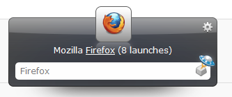

Welcome to the new Launchy Home.
Using its creator words:
Launchy is: a free cross-platform utility designed to help you forget
about your start menu, the icons on your desktop,
and even your file manager.
Launchy indexes the programs in your start menu
and can launch your documents, project files,
folders, and bookmarks with just a few keystrokes!
Josh Karlin
The original author no longer maintains Launchy so at this point the project is in the hand of the Open Source community.
From this page you can download the last version of Launchy along its new features and bugfixes!
User Interface
Launchy comes with a good-to-look-at, customizable, skinnable user interface. Take a look:

You can download billions of skins on
Launchy gallery @ Deviantart
Authors and Contributors
You can find my profile @OpenNingia on Github. I'm the main contributor at the moment but a special thank go to @Irwin1138 for putting Launchy code on Github.